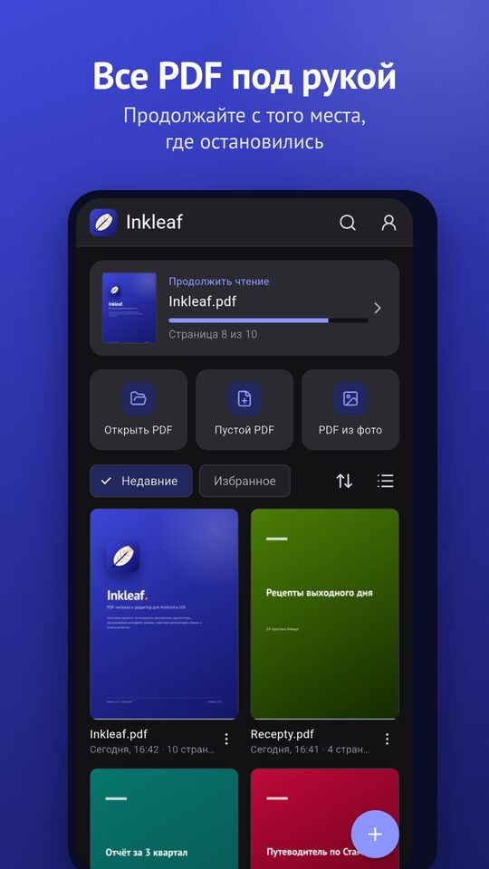
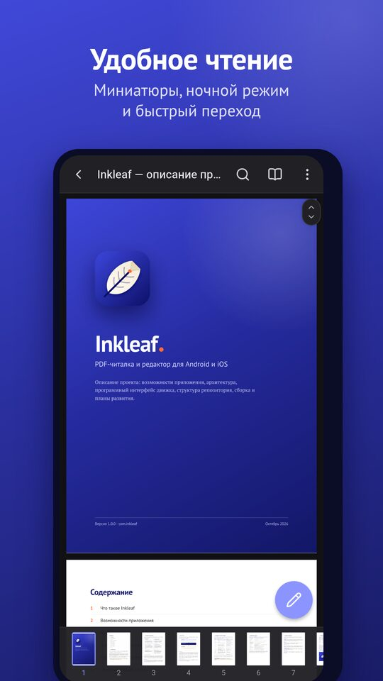
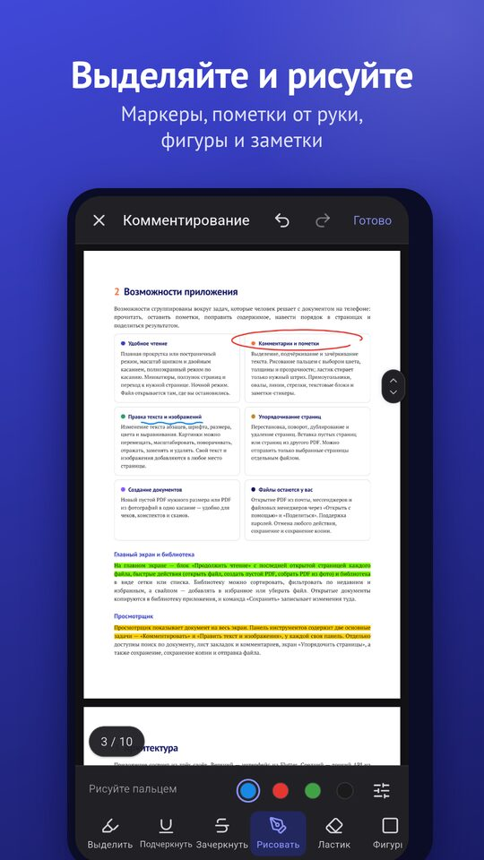

Inkleaf — чтение и редактирование PDF
Быстрое и удобное приложение, чтобы читать, размечать и редактировать PDF прямо в телефоне. Работает без интернета — документы не покидают ваше устройство.



Возможности
Удобное чтение
Плавная прокрутка или по страницам, миниатюры, поиск, закладки и ночной режим. Файл открывается там, где вы остановились.
Комментарии и пометки
Выделение, подчёркивание, зачёркивание, рисование, фигуры, текстовые блоки и стикеры.
Правка текста и картинок
Меняйте текст абзацев, шрифт и цвет; перемещайте, масштабируйте, заменяйте и удаляйте изображения.
Упорядочивание страниц
Меняйте порядок, поворачивайте, дублируйте, удаляйте и вставляйте страницы; отправляйте только нужные.
Создание
Новые пустые PDF или PDF из фотографий в одно касание.
Конфиденциально
Без аккаунта, рекламы и слежки, интернет не нужен. 20 языков интерфейса.